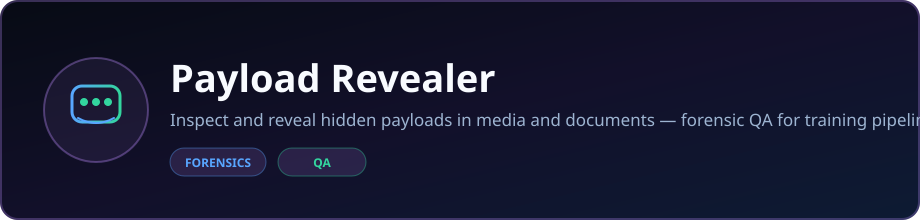
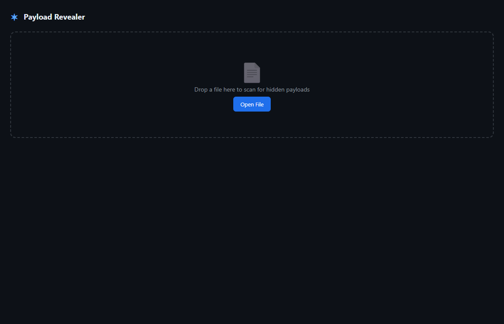

Catches invisible Unicode instructions hidden inside copied text — zero-width characters, bidi overrides, Unicode tags, and other copy/paste artifacts that can smuggle answers or prompt instructions into Slack, docs, chats, or evaluation tasks. Runs live in this page, no install needed.
Built by Angela Hudson · DaCameraGirl
Runs entirely in this tab — nothing you paste or drop ever leaves your browser. Paste suspicious text or drop a .txt file to scan it.
A copied answer can look normal in Slack while carrying invisible Unicode underneath — hidden instructions like “pick option 3” or “tell them X said Y.” PowerShell and some editors may expose weird characters; Payload Revealer does the systematic version: enumerate every codepoint, report suspicious invisible characters, and decode embedded payloads when possible.
If something pasted suspicious: paste it into the live scanner above — or, for scripting and batch/audit-trail work, use the CLI:
python -m payload_revealer .\suspicious.txt
# For a shareable audit trail:
python -m payload_revealer .\suspicious.txt --format json --output report.json
The live scanner above needs nothing installed. Grab the desktop app instead if you want it offline, or working outside a browser:
That release also ships payload_revealer_engine-*-win64.exe on its own — the headless scan engine the desktop app runs underneath. It's for scripting scans without the GUI; double-clicking it directly just opens an empty console, it isn't a standalone app.
Or use the CLI with Python:
pip install -e .
python -m payload_revealer tests/fixtures/forensic_report.txtThe fixture contains 312 zero-width characters encoding a hidden beacon URL:
beacon://c2-exfil.lan/reg?agent=demo-01- Character Count Scanner — Total character count even if content is invisible
- Invisible Payload Detector — Flags zero-width spaces, Unicode control characters, bidirectional overrides, invisible whitespace, Unicode tags, and other hidden text artifacts
- Visualizer Panel — Shows hidden content in decoded, readable format
- Word Count Tracker — Actual word count vs. visible word count
- Export Option — Save decoded payload as
.txtor.jsonforensic artifact
git clone https://github.com/DaCameraGirl/payload-revealer.git
cd payload-revealer
npm install
pip install -e .Desktop App (Electron)
npm startCLI Headless Mode
# Quick scan
python -m payload_revealer ./suspicious.txt
# JSON output
python -m payload_revealer ./suspicious.txt --format json
# Save report
python -m payload_revealer ./suspicious.txt --output report.json
# Batch scan a directory
python -m payload_revealer ./suspicious_docs/ --recursiveCLI Options
| Flag | Description |
|---|---|
--format, -f | text, json, or txt (default: text) |
--output, -o | Save report to file |
--recursive, -r | Recurse into directories |
--min-risk | Filter findings: critical, high, medium, low, none |
--quiet, -q | Suppress non-result output |
--version | Show version |
| Category | Examples | Risk |
|---|---|---|
| Zero-width spaces | U+200B, U+200C, U+200D, U+FEFF | Critical |
| Bidi overrides | U+202A–U+202E (LRE, RLO, etc.) | Critical |
| Unicode tags | U+E0001–U+E007F (hidden metadata) | Critical |
| C0/C1 controls | U+0000–U+001F, U+0080–U+009F | High |
| Variation selectors | U+FE00–U+FE0F, U+E0100–U+E01EF | Medium |
| Private Use Areas | U+E000–U+F8FF, U+F0000–U+10FFFF | Medium |
| Invisible whitespace | NBSP, en-space, ideographic space | Low |
| Noncharacters | U+FFFE, U+FFFF, etc. | High |
This tool is scoped to text and Unicode forensics. It is not a universal steganography detector.
| Scenario | Why it is out of scope |
|---|---|
| CSS-transparent text | Letters hidden with color: transparent or similar styling are normal Unicode when pasted into a plain text file. Payload Revealer does not parse HTML or CSS. |
| Image, PDF, or media steganography | No parsers for LSB image stego, PDF object tricks, audio watermarks, or other binary media payloads. |
payload_revealer/
├── payload_revealer/ # Python engine
│ ├── engine/
│ │ ├── sweeper.py # Core character scanner
│ │ ├── classifier.py # Unicode category tagging
│ │ ├── payload_extractor.py # Hidden message reconstruction
│ │ ├── word_counter.py # Visible vs actual word count
│ │ ├── export_engine.py # JSON/TXT report export
│ │ └── ipc_bridge.py # JSON-RPC for Electron
│ └── cli/
│ └── reveal.py # CLI headless mode
├── electron/ # Desktop shell
│ ├── main.js # Electron main process
│ ├── preload.js # Secure IPC bridge
│ └── renderer/ # UI
│ ├── index.html
│ ├── style.css
│ └── renderer.js
└── package.json